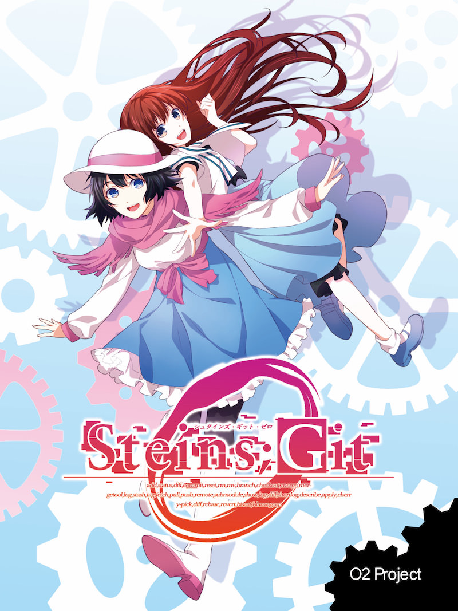

Steins;Git 0 新刊
これは、Git + GitHubでSteins;Gateを説明する物語。Steins;Gitの正統続編。

| ページ数 | 22ページ（A5） |
|---|---|
| 価格 | 500円 |
| イラスト | GiantRobot |
| 表紙 | @KinoAkmt |
| 著者 | @kubosho_ |
| 内容 |
本書はGitでSteins;Gateを説明する本です。 |
| 目次 |
|
Reset CSSフレンズ 既刊 技術書典2初出
Reset CSSについてくわしくかいたほんだよー！